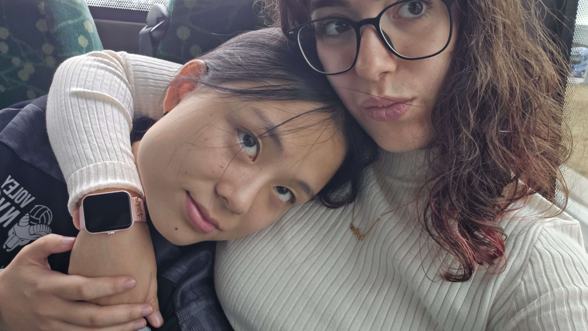
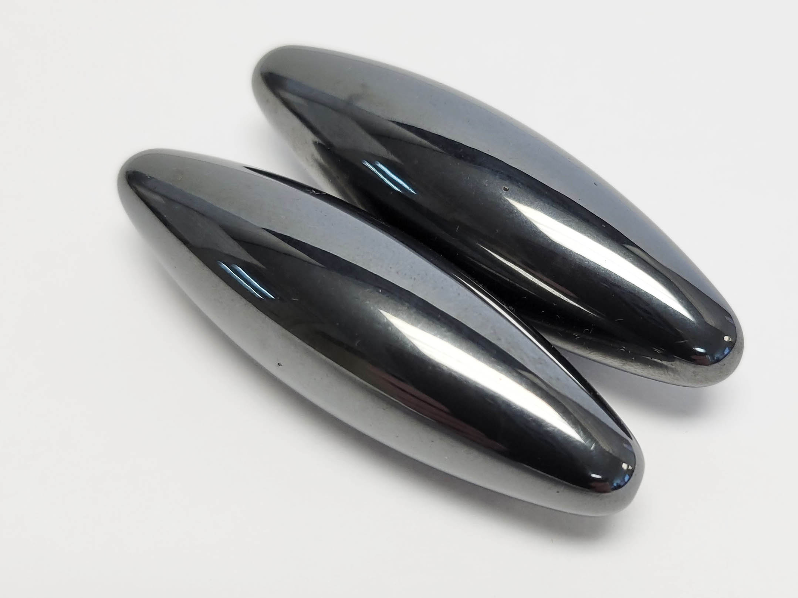
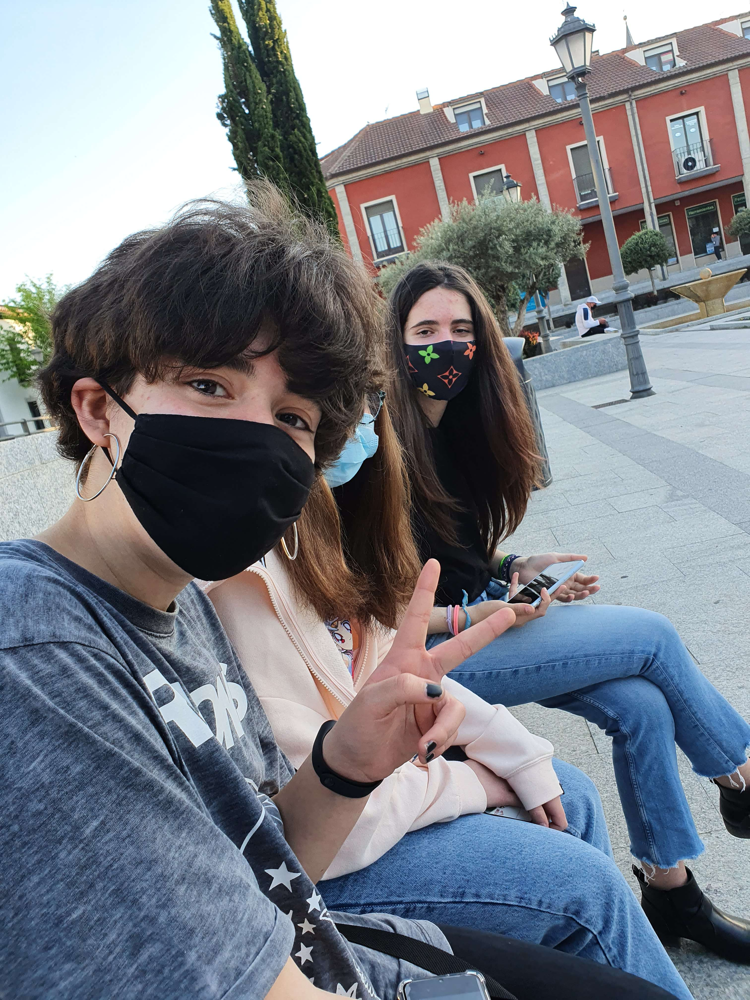
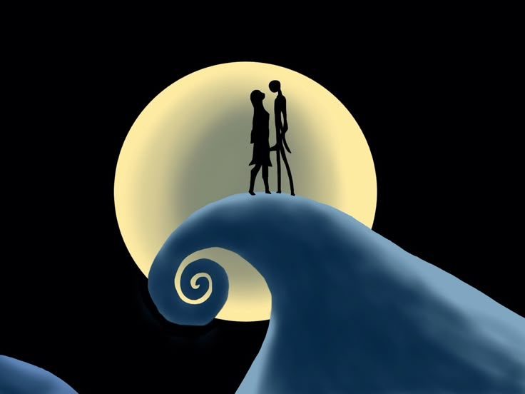
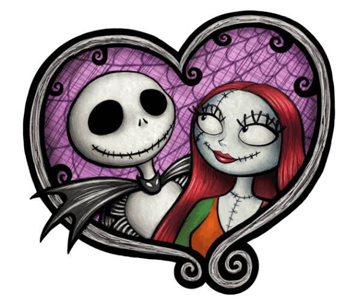
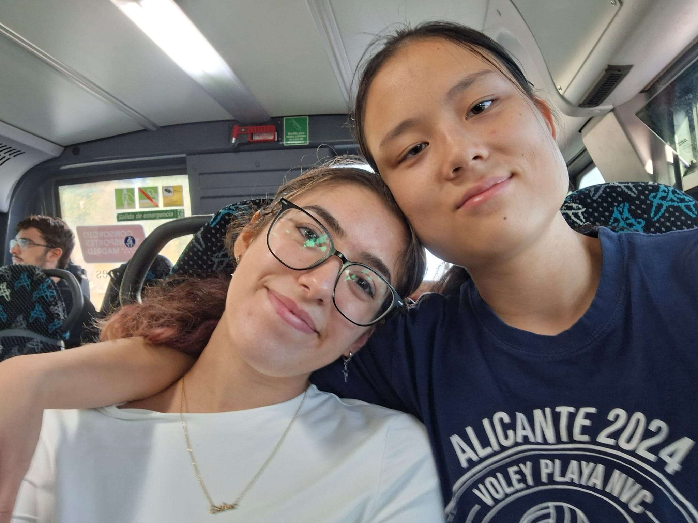

Nuestros años,
una recopilación.
Un resumen cortito de una historia bastante larga.
01 / Reproduciendo nuestra historia
Nuestro Wrapped
Toca un segmento o usa ← →
Pulsa Reproducir para ver el Wrapped a tu ritmo.
02 / Aun que los números no son lo mío...
Lo nuestro, en cifras
TIEMPO JUNTOS♡
∞
Horas hablando
Y todavía nos quedan mil cosas por contarnos.
Horas y horas✦
VC
Llamadas que hacen que las horas parezcan minutos
Miles y miles✉
NOTIFICACIONES
Por suerte o por desgracia nuestro medio de comunicación principal, pero no lo cambiaría por nada.
Mi mayor deseo↗
TIEMPO JUNTOS
Escaso pero importante
Los momentos que nos faltan pero que hacemos importantes.
LA FRASE FAVORITA♥
∞
“Te quiero”
Porque dos palabras tuyas me pueden alegrar tanto un día, todos los días.
03 / Los capítulos que nos trajeron aquí
Nuestra línea del tiempo
Inocencia
-
2014(?
00Colonias deportivas
Una amistad y dos imanes perdidos
Dos niños que pasaban las mañanas en las colonias deportivas del pueblo, sin saber que su vínculo podría llegar a mucho más.

Amistad
-
2020
01La cuarentena y nosotros
A distancia desde hace más de lo que pensamos
Comenzamos a ser amigos realmente en la ESO, teníamos un grupo (de mierda) en común y nos tocó vivir época de cuarentena.
Quien nos iba a decir en aquellos tiempos que usabamos mascarillas y teniamos que estar siempre tan lejos, que en un futuro querríamos estar tan cerca pero seguir sin poder

Nuestra historia
-
2022
02Todo empezó
La primera página de lo nuestro
Ese primer momento en que algo hizo clic y empezó una historia que no sabíamos cuánto íbamos a querer.

-
2022
03Una aventura más
Salir a descubrir el mundo
Un paseo, una conversación que se alargó y esa sensación de que cualquier lugar es el indicado si vamos juntos.

-
2022
04Risa compartida
Cuando no podíamos parar de reír
Una de esas anécdotas que seguro vamos a volver a contar, aunque ya sepamos el final.
-
2022
05Un recuerdo favorito
Un día normal que fue perfecto
Sin grandes planes ni prisa: solo nosotros, guardando otro recuerdo para la colección.

-
2022
06Mucho cariño
Los detalles que dicen “te quiero”
Estar, escuchar, acompañarnos y elegirnos también en los días de siempre.

-
2022
07Continuará...
El capítulo que empieza ahora
Más planes, más abrazos y todas las aventuras que todavía nos esperan.

Actualidad
-
2022
08El reencuentro
Como que "?" 😭
-
2022
09Playlists
-
2022
10Al baño sin luz
El segundo primer beso
-
2022
11Otro sitio especial
Un recuerdo para guardar

-
2022
12Y otro más
Más momentos juntos

04 / Favoritos del año
Los tops de nuestro corazón
Top 5 momentos inolvidables ✦
- 01La primera gran aventuraUn recuerdo que siempre vuelve
- 02Ese ataque de risaY no podíamos parar
- 03El plan improvisadoEl mejor “¿y si vamos?”
- 04Una tarde sin mirar la horaSolo nosotros y el momento
- 05Cada abrazo de “ya estoy aquí”Mi lugar favorito
Top 5 cosas que amo de ti ♥
- ♥Tu forma de hacerme reírMi sonido favorito
- ✿Cómo cuidas los detallesSiempre tienes un gesto bonito
- ✦Tu manera de escucharContigo puedo ser yo
- ☻La calma que me dasUn abrazo y todo está bien
- ♡Que seas tú, siempreMi persona favorita
05 / La última página de este año
Una carta para ti
PARA MI PERSONA FAVORITA
Mi amor:
Si pudiera guardar este año en una cajita, pondría ahí cada risa, cada abrazo y todos esos momentos sencillos que se volvieron especiales solo porque los compartimos.
Gracias por estar, por escucharme, por hacerme reír y por ser ese lugar al que siempre quiero volver. Lo que más me ilusiona de todo lo que vivimos es saber que todavía nos esperan un montón de primeras veces.
Ojalá el próximo año nos encuentre así: haciendo planes, inventando otros sobre la marcha y eligiéndonos en los días grandes y en los pequeñitos.
Feliz Navidad. Te quiero con todo mi corazón.
Siempre tuyo/a ♡
EL PRÓXIMO CAPÍTULO
Una cápsula de deseos
Añade un deseo o plan para nuestro próximo año y pégalo en el tablero.